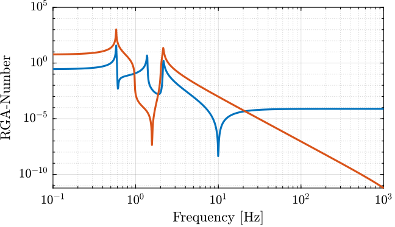
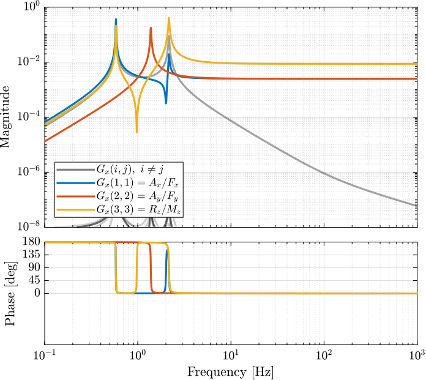
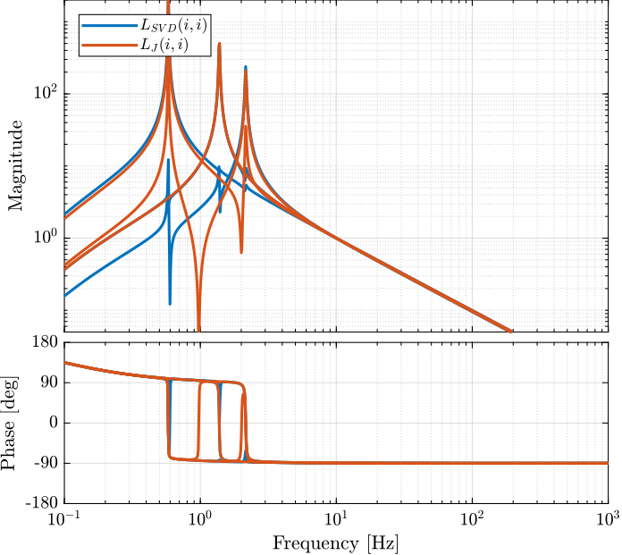
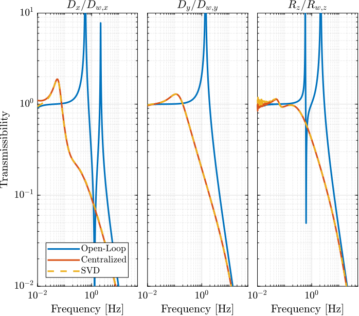
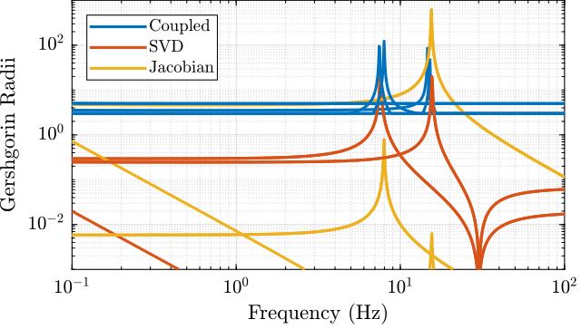

Diagonal control using the SVD and the Jacobian Matrix
Table of Contents
- 1. Gravimeter - Simscape Model
- 1.1. Introduction
- 1.2. Gravimeter Model - Parameters
- 1.3. System Identification
- 1.4. Decoupling using the Jacobian
- 1.5. Decoupling using the SVD
- 1.6. Verification of the decoupling using the “Gershgorin Radii”
- 1.7. Verification of the decoupling using the “Relative Gain Array”
- 1.8. Obtained Decoupled Plants
- 1.9. Diagonal Controller
- 1.10. Closed-Loop system Performances
- 1.11. Robustness to a change of actuator position
- 1.12. Choice of the reference frame for Jacobian decoupling
- 1.13. SVD decoupling performances
- 2. Stewart Platform - Simscape Model
- 2.1. Simscape Model - Parameters
- 2.2. Identification of the plant
- 2.3. Decoupling using the Jacobian
- 2.4. Decoupling using the SVD
- 2.5. Verification of the decoupling using the “Gershgorin Radii”
- 2.6. Verification of the decoupling using the “Relative Gain Array”
- 2.7. Obtained Decoupled Plants
- 2.8. Diagonal Controller
- 2.9. Closed-Loop system Performances
This report is also available as a pdf.
In this document, the use of the Jacobian matrix and the Singular Value Decomposition to render a physical plant diagonal dominant is studied. Then, a diagonal controller is used.
These two methods are tested on two plants:
1 Gravimeter - Simscape Model
1.1 Introduction
In this part, diagonal control using both the SVD and the Jacobian matrices are applied on a gravimeter model:
- Section 1.2: the model is described and its parameters are defined.
- Section 1.3: the plant dynamics from the actuators to the sensors is computed from a Simscape model.
- Section 1.4: the plant is decoupled using the Jacobian matrices.
- Section 1.5: the Singular Value Decomposition is performed on a real approximation of the plant transfer matrix and further use to decouple the system.
- Section 1.6: the effectiveness of the decoupling is computed using the Gershorin radii
- Section 1.7: the effectiveness of the decoupling is computed using the Relative Gain Array
- Section 1.8: the obtained decoupled plants are compared
- Section 1.9: the diagonal controller is developed
- Section 1.10: the obtained closed-loop performances for the two methods are compared
- Section 1.11: the robustness to a change of actuator position is evaluated
- Section 1.12: the choice of the reference frame for the evaluation of the Jacobian is discussed
- Section 1.13: the decoupling performances of SVD is evaluated for a low damped and an highly damped system
1.2 Gravimeter Model - Parameters
The model of the gravimeter is schematically shown in Figure 1.

Figure 1: Model of the gravimeter

Figure 2: Model of the struts
The parameters used for the simulation are the following:
l = 1.0; % Length of the mass [m] h = 1.7; % Height of the mass [m] la = l/2; % Position of Act. [m] ha = h/2; % Position of Act. [m] m = 400; % Mass [kg] I = 115; % Inertia [kg m^2] k = 15e3; % Actuator Stiffness [N/m] c = 2e1; % Actuator Damping [N/(m/s)] deq = 0.2; % Length of the actuators [m] g = 0; % Gravity [m/s2]
1.3 System Identification
%% Name of the Simulink File mdl = 'gravimeter'; %% Input/Output definition clear io; io_i = 1; io(io_i) = linio([mdl, '/F1'], 1, 'openinput'); io_i = io_i + 1; io(io_i) = linio([mdl, '/F2'], 1, 'openinput'); io_i = io_i + 1; io(io_i) = linio([mdl, '/F3'], 1, 'openinput'); io_i = io_i + 1; io(io_i) = linio([mdl, '/Acc_side'], 1, 'openoutput'); io_i = io_i + 1; io(io_i) = linio([mdl, '/Acc_side'], 2, 'openoutput'); io_i = io_i + 1; io(io_i) = linio([mdl, '/Acc_top'], 1, 'openoutput'); io_i = io_i + 1; io(io_i) = linio([mdl, '/Acc_top'], 2, 'openoutput'); io_i = io_i + 1; G = linearize(mdl, io); G.InputName = {'F1', 'F2', 'F3'}; G.OutputName = {'Ax1', 'Ay1', 'Ax2', 'Ay2'};
The inputs and outputs of the plant are shown in Figure 3.
More precisely there are three inputs (the three actuator forces):
\begin{equation} \bm{\tau} = \begin{bmatrix}\tau_1 \\ \tau_2 \\ \tau_2 \end{bmatrix} \end{equation}And 4 outputs (the two 2-DoF accelerometers):
\begin{equation} \bm{a} = \begin{bmatrix} a_{1x} \\ a_{1y} \\ a_{2x} \\ a_{2y} \end{bmatrix} \end{equation}
Figure 3: Schematic of the gravimeter plant
We can check the poles of the plant:
| -0.12243+13.551i |
| -0.12243-13.551i |
| -0.05+8.6601i |
| -0.05-8.6601i |
| -0.0088785+3.6493i |
| -0.0088785-3.6493i |
As expected, the plant as 6 states (2 translations + 1 rotation)
size(G)
State-space model with 4 outputs, 3 inputs, and 6 states.
The bode plot of all elements of the plant are shown in Figure 4.

Figure 4: Open Loop Transfer Function from 3 Actuators to 4 Accelerometers
1.4 Decoupling using the Jacobian
Consider the control architecture shown in Figure 5.
The Jacobian matrix \(J_{\tau}\) is used to transform forces applied by the three actuators into forces/torques applied on the gravimeter at its center of mass:
\begin{equation} \begin{bmatrix} \tau_1 \\ \tau_2 \\ \tau_3 \end{bmatrix} = J_{\tau}^{-T} \begin{bmatrix} F_x \\ F_y \\ M_z \end{bmatrix} \end{equation}The Jacobian matrix \(J_{a}\) is used to compute the vertical acceleration, horizontal acceleration and rotational acceleration of the mass with respect to its center of mass:
\begin{equation} \begin{bmatrix} a_x \\ a_y \\ a_{R_z} \end{bmatrix} = J_{a}^{-1} \begin{bmatrix} a_{x1} \\ a_{y1} \\ a_{x2} \\ a_{y2} \end{bmatrix} \end{equation}We thus define a new plant as defined in Figure 5. \[ \bm{G}_x(s) = J_a^{-1} \bm{G}(s) J_{\tau}^{-T} \]
\(\bm{G}_x(s)\) correspond to the \(3 \times 3\) transfer function matrix from forces and torques applied to the gravimeter at its center of mass to the absolute acceleration of the gravimeter’s center of mass (Figure 5).
Figure 5: Decoupled plant \(\bm{G}_x\) using the Jacobian matrix \(J\)
The Jacobian corresponding to the sensors and actuators are defined below:
Ja = [1 0 -h/2 0 1 l/2 1 0 h/2 0 1 0]; Jt = [1 0 -ha 0 1 la 0 1 -la];
And the plant \(\bm{G}_x\) is computed:
Gx = pinv(Ja)*G*pinv(Jt'); Gx.InputName = {'Fx', 'Fy', 'Mz'}; Gx.OutputName = {'Dx', 'Dy', 'Rz'};
size(Gx) State-space model with 3 outputs, 3 inputs, and 6 states.
The diagonal and off-diagonal elements of \(G_x\) are shown in Figure 6.
It is shown at the system is:
- decoupled at high frequency thanks to a diagonal mass matrix (the Jacobian being evaluated at the center of mass of the payload)
- coupled at low frequency due to the non-diagonal terms in the stiffness matrix, especially the term corresponding to a coupling between a force in the x direction to a rotation around z (due to the torque applied by the stiffness 1).
The choice of the frame in this the Jacobian is evaluated is discussed in Section 1.12.

Figure 6: Diagonal and off-diagonal elements of \(G_x\)
1.5 Decoupling using the SVD
In order to decouple the plant using the SVD, first a real approximation of the plant transfer function matrix as the crossover frequency is required.
Let’s compute a real approximation of the complex matrix \(H_1\) which corresponds to the the transfer function \(G(j\omega_c)\) from forces applied by the actuators to the measured acceleration of the top platform evaluated at the frequency \(\omega_c\).
wc = 2*pi*10; % Decoupling frequency [rad/s] H1 = evalfr(G, j*wc);
The real approximation is computed as follows:
D = pinv(real(H1'*H1)); H1 = pinv(D*real(H1'*diag(exp(j*angle(diag(H1*D*H1.'))/2))));
| 0.0092 | -0.0039 | 0.0039 |
| -0.0039 | 0.0048 | 0.00028 |
| -0.004 | 0.0038 | -0.0038 |
| 8.4e-09 | 0.0025 | 0.0025 |
Now, the Singular Value Decomposition of \(H_1\) is performed: \[ H_1 = U \Sigma V^H \]
[U,S,V] = svd(H1);
| -0.78 | 0.26 | -0.53 | -0.2 |
| 0.4 | 0.61 | -0.04 | -0.68 |
| 0.48 | -0.14 | -0.85 | 0.2 |
| 0.03 | 0.73 | 0.06 | 0.68 |
| -0.79 | 0.11 | -0.6 |
| 0.51 | 0.67 | -0.54 |
| -0.35 | 0.73 | 0.59 |
The obtained matrices \(U\) and \(V\) are used to decouple the system as shown in Figure 7.
Figure 7: Decoupled plant \(\bm{G}_{SVD}\) using the Singular Value Decomposition
The decoupled plant is then: \[ \bm{G}_{SVD}(s) = U^{-1} \bm{G}(s) V^{-H} \]
Gsvd = inv(U)*G*inv(V');
size(Gsvd) State-space model with 4 outputs, 3 inputs, and 6 states.
The 4th output (corresponding to the null singular value) is discarded, and we only keep the \(3 \times 3\) plant:
Gsvd = Gsvd(1:3, 1:3);
The diagonal and off-diagonal elements of the “SVD” plant are shown in Figure 8.

Figure 8: Diagonal and off-diagonal elements of \(G_{svd}\)
1.6 Verification of the decoupling using the “Gershgorin Radii”
The “Gershgorin Radii” is computed for the coupled plant \(G(s)\), for the “Jacobian plant” \(G_x(s)\) and the “SVD Decoupled Plant” \(G_{SVD}(s)\):
The “Gershgorin Radii” of a matrix \(S\) is defined by: \[ \zeta_i(j\omega) = \frac{\sum\limits_{j\neq i}|S_{ij}(j\omega)|}{|S_{ii}(j\omega)|} \]
Figure 9: Gershgorin Radii of the Coupled and Decoupled plants
1.7 Verification of the decoupling using the “Relative Gain Array”
The relative gain array (RGA) is defined as:
\begin{equation} \Lambda\big(G(s)\big) = G(s) \times \big( G(s)^{-1} \big)^T \end{equation}where \(\times\) denotes an element by element multiplication and \(G(s)\) is an \(n \times n\) square transfer matrix.
The obtained RGA elements are shown in Figure 10.
Figure 10: Obtained norm of RGA elements for the SVD decoupled plant and the Jacobian decoupled plant
The RGA-number is also a measure of diagonal dominance:
\begin{equation} \text{RGA-number} = \| \Lambda(G) - I \|_\text{sum} \end{equation}
Figure 11: RGA-Number for the Gravimeter
1.8 Obtained Decoupled Plants
The bode plot of the diagonal and off-diagonal elements of \(G_{SVD}\) are shown in Figure 12.

Figure 12: Decoupled Plant using SVD
Similarly, the bode plots of the diagonal elements and off-diagonal elements of the decoupled plant \(G_x(s)\) using the Jacobian are shown in Figure 13.

Figure 13: Gravimeter Platform Plant from forces (resp. torques) applied by the legs to the acceleration (resp. angular acceleration) of the platform as well as all the coupling terms between the two (non-diagonal terms of the transfer function matrix)
1.9 Diagonal Controller
The control diagram for the centralized control is shown in Figure 14.
The controller \(K_c\) is “working” in an cartesian frame. The Jacobian is used to convert forces in the cartesian frame to forces applied by the actuators.

Figure 14: Control Diagram for the Centralized control
The SVD control architecture is shown in Figure 15. The matrices \(U\) and \(V\) are used to decoupled the plant \(G\).

Figure 15: Control Diagram for the SVD control
We choose the controller to be a low pass filter: \[ K_c(s) = \frac{G_0}{1 + \frac{s}{\omega_0}} \]
\(G_0\) is tuned such that the crossover frequency corresponding to the diagonal terms of the loop gain is equal to \(\omega_c\)
wc = 2*pi*10; % Crossover Frequency [rad/s] w0 = 2*pi*0.1; % Controller Pole [rad/s]
K_cen = diag(1./diag(abs(evalfr(Gx, j*wc))))*(1/abs(evalfr(1/(1 + s/w0), j*wc)))/(1 + s/w0); L_cen = K_cen*Gx; G_cen = feedback(G, pinv(Jt')*K_cen*pinv(Ja));
K_svd = diag(1./diag(abs(evalfr(Gsvd, j*wc))))*(1/abs(evalfr(1/(1 + s/w0), j*wc)))/(1 + s/w0); L_svd = K_svd*Gsvd; U_inv = inv(U); G_svd = feedback(G, inv(V')*K_svd*U_inv(1:3, :));
The obtained diagonal elements of the loop gains are shown in Figure 16.

Figure 16: Comparison of the diagonal elements of the loop gains for the SVD control architecture and the Jacobian one
1.10 Closed-Loop system Performances
Let’s first verify the stability of the closed-loop systems:
isstable(G_cen)
ans = logical 1
isstable(G_svd)
ans = logical 1
The obtained transmissibility in Open-loop, for the centralized control as well as for the SVD control are shown in Figure 17.

Figure 17: Obtained Transmissibility

Figure 18: Obtain coupling terms of the transmissibility matrix
1.11 Robustness to a change of actuator position
Let say we change the position of the actuators:
la = l/2*0.7; % Position of Act. [m] ha = h/2*0.7; % Position of Act. [m]
The new plant is computed, and the centralized and SVD control architectures are applied using the previously computed Jacobian matrices and \(U\) and \(V\) matrices.
The closed-loop system are still stable in both cases, and the obtained transmissibility are equivalent as shown in Figure 19.
Figure 19: Transmissibility for the initial CL system and when the position of actuators are changed
1.12 Choice of the reference frame for Jacobian decoupling
If we want to decouple the system at low frequency (determined by the stiffness matrix), we have to compute the Jacobian at a point where the stiffness matrix is diagonal. A displacement (resp. rotation) of the mass at this particular point should induce a pure force (resp. torque) on the same point due to stiffnesses in the system. This can be verified by geometrical computations.
If we want to decouple the system at high frequency (determined by the mass matrix), we have tot compute the Jacobians at the Center of Mass of the suspended solid. Similarly to the stiffness analysis, when considering only the inertia effects (neglecting the stiffnesses), a force (resp. torque) applied at this point (the center of mass) should induce a pure acceleration (resp. angular acceleration).
Ideally, we would like to have a decoupled mass matrix and stiffness matrix at the same time. To do so, the actuators (springs) should be positioned such that the stiffness matrix is diagonal when evaluated at the CoM of the solid.
1.12.1 Decoupling of the mass matrix
Figure 20: Choice of {O} such that the Mass Matrix is Diagonal
la = l/2; % Position of Act. [m] ha = h/2; % Position of Act. [m]
%% Name of the Simulink File mdl = 'gravimeter'; %% Input/Output definition clear io; io_i = 1; io(io_i) = linio([mdl, '/F1'], 1, 'openinput'); io_i = io_i + 1; io(io_i) = linio([mdl, '/F2'], 1, 'openinput'); io_i = io_i + 1; io(io_i) = linio([mdl, '/F3'], 1, 'openinput'); io_i = io_i + 1; io(io_i) = linio([mdl, '/Acc_side'], 1, 'openoutput'); io_i = io_i + 1; io(io_i) = linio([mdl, '/Acc_side'], 2, 'openoutput'); io_i = io_i + 1; io(io_i) = linio([mdl, '/Acc_top'], 1, 'openoutput'); io_i = io_i + 1; io(io_i) = linio([mdl, '/Acc_top'], 2, 'openoutput'); io_i = io_i + 1; G = linearize(mdl, io); G.InputName = {'F1', 'F2', 'F3'}; G.OutputName = {'Ax1', 'Ay1', 'Ax2', 'Ay2'};
Decoupling at the CoM (Mass decoupled)
JMa = [1 0 -h/2 0 1 l/2 1 0 h/2 0 1 0]; JMt = [1 0 -ha 0 1 la 0 1 -la];
GM = pinv(JMa)*G*pinv(JMt'); GM.InputName = {'Fx', 'Fy', 'Mz'}; GM.OutputName = {'Dx', 'Dy', 'Rz'};

Figure 21: Diagonal and off-diagonal elements of the decoupled plant
1.12.2 Decoupling of the stiffness matrix

Figure 22: Choice of {O} such that the Stiffness Matrix is Diagonal
Decoupling at the point where K is diagonal (x = 0, y = -h/2 from the schematic {O} frame):
JKa = [1 0 0
0 1 -l/2
1 0 -h
0 1 0];
JKt = [1 0 0
0 1 -la
0 1 la];
And the plant \(\bm{G}_x\) is computed:
GK = pinv(JKa)*G*pinv(JKt'); GK.InputName = {'Fx', 'Fy', 'Mz'}; GK.OutputName = {'Dx', 'Dy', 'Rz'};
Figure 23: Diagonal and off-diagonal elements of the decoupled plant
1.12.3 Combined decoupling of the mass and stiffness matrices
Figure 24: Ideal location of the actuators such that both the mass and stiffness matrices are diagonal
To do so, the actuator position should be modified
la = l/2; % Position of Act. [m] ha = 0; % Position of Act. [m]
%% Name of the Simulink File mdl = 'gravimeter'; %% Input/Output definition clear io; io_i = 1; io(io_i) = linio([mdl, '/F1'], 1, 'openinput'); io_i = io_i + 1; io(io_i) = linio([mdl, '/F2'], 1, 'openinput'); io_i = io_i + 1; io(io_i) = linio([mdl, '/F3'], 1, 'openinput'); io_i = io_i + 1; io(io_i) = linio([mdl, '/Acc_side'], 1, 'openoutput'); io_i = io_i + 1; io(io_i) = linio([mdl, '/Acc_side'], 2, 'openoutput'); io_i = io_i + 1; io(io_i) = linio([mdl, '/Acc_top'], 1, 'openoutput'); io_i = io_i + 1; io(io_i) = linio([mdl, '/Acc_top'], 2, 'openoutput'); io_i = io_i + 1; G = linearize(mdl, io); G.InputName = {'F1', 'F2', 'F3'}; G.OutputName = {'Ax1', 'Ay1', 'Ax2', 'Ay2'};
JMa = [1 0 -h/2 0 1 l/2 1 0 h/2 0 1 0]; JMt = [1 0 -ha 0 1 la 0 1 -la];
GKM = pinv(JMa)*G*pinv(JMt'); GKM.InputName = {'Fx', 'Fy', 'Mz'}; GKM.OutputName = {'Dx', 'Dy', 'Rz'};
Figure 25: Diagonal and off-diagonal elements of the decoupled plant
1.12.4 Conclusion
Ideally, the mechanical system should be designed in order to have a decoupled stiffness matrix at the CoM of the solid.
If not the case, the system can either be decoupled as low frequency if the Jacobian are evaluated at a point where the stiffness matrix is decoupled. Or it can be decoupled at high frequency if the Jacobians are evaluated at the CoM.
1.13 SVD decoupling performances
As the SVD is applied on a real approximation of the plant dynamics at a frequency \(\omega_0\), it is foreseen that the effectiveness of the decoupling depends on the validity of the real approximation.
Let’s do the SVD decoupling on a plant that is mostly real (low damping) and one with a large imaginary part (larger damping).
Start with small damping, the obtained diagonal and off-diagonal terms are shown in Figure 26.
c = 2e1; % Actuator Damping [N/(m/s)]

Figure 26: Diagonal and off-diagonal term when decoupling with SVD on the gravimeter with small damping
Now take a larger damping, the obtained diagonal and off-diagonal terms are shown in Figure 27.
c = 5e2; % Actuator Damping [N/(m/s)]
Figure 27: Diagonal and off-diagonal term when decoupling with SVD on the gravimeter with high damping
2 Stewart Platform - Simscape Model
In this analysis, we wish to applied SVD control to the Stewart Platform shown in Figure 28.
Some notes about the system:
- 6 voice coils actuators are used to control the motion of the top platform.
- the motion of the top platform is measured with a 6-axis inertial unit (3 acceleration + 3 angular accelerations)
- the control objective is to isolate the top platform from vibrations coming from the bottom platform

Figure 28: Stewart Platform CAD View
The analysis of the SVD/Jacobian control applied to the Stewart platform is performed in the following sections:
- Section 2.1: The parameters of the Simscape model of the Stewart platform are defined
- Section 2.2: The plant is identified from the Simscape model and the system coupling is shown
- Section 2.3: The plant is first decoupled using the Jacobian
- Section 2.4: The decoupling is performed thanks to the SVD. To do so a real approximation of the plant is computed.
- Section 2.5: The effectiveness of the decoupling with the Jacobian and SVD are compared using the Gershorin Radii
- Section 2.6:
- Section 2.7: The dynamics of the decoupled plants are shown
- Section 2.8: A diagonal controller is defined to control the decoupled plant
- Section 2.9: Finally, the closed loop system properties are studied
2.1 Simscape Model - Parameters
open('drone_platform.slx');
Definition of spring parameters:
kx = 0.5*1e3/3; % [N/m] ky = 0.5*1e3/3; kz = 1e3/3; cx = 0.025; % [Nm/rad] cy = 0.025; cz = 0.025;
We suppose the sensor is perfectly positioned.
sens_pos_error = zeros(3,1);
Gravity:
g = 0;
We load the Jacobian (previously computed from the geometry):
load('jacobian.mat', 'Aa', 'Ab', 'As', 'l', 'J');
We initialize other parameters:
U = eye(6); V = eye(6); Kc = tf(zeros(6));
Figure 29: General view of the Simscape Model

Figure 30: Simscape model of the Stewart platform
2.2 Identification of the plant
The plant shown in Figure 31 is identified from the Simscape model.
The inputs are:
- \(D_w\) translation and rotation of the bottom platform (with respect to the center of mass of the top platform)
- \(\tau\) the 6 forces applied by the voice coils
The outputs are the 6 accelerations measured by the inertial unit.
Figure 31: Considered plant \(\bm{G} = \begin{bmatrix}G_d\\G_u\end{bmatrix}\). \(D_w\) is the translation/rotation of the support, \(\tau\) the actuator forces, \(a\) the acceleration/angular acceleration of the top platform
%% Name of the Simulink File mdl = 'drone_platform'; %% Input/Output definition clear io; io_i = 1; io(io_i) = linio([mdl, '/Dw'], 1, 'openinput'); io_i = io_i + 1; % Ground Motion io(io_i) = linio([mdl, '/V-T'], 1, 'openinput'); io_i = io_i + 1; % Actuator Forces io(io_i) = linio([mdl, '/Inertial Sensor'], 1, 'openoutput'); io_i = io_i + 1; % Top platform acceleration G = linearize(mdl, io); G.InputName = {'Dwx', 'Dwy', 'Dwz', 'Rwx', 'Rwy', 'Rwz', ... 'F1', 'F2', 'F3', 'F4', 'F5', 'F6'}; G.OutputName = {'Ax', 'Ay', 'Az', 'Arx', 'Ary', 'Arz'}; % Plant Gu = G(:, {'F1', 'F2', 'F3', 'F4', 'F5', 'F6'}); % Disturbance dynamics Gd = G(:, {'Dwx', 'Dwy', 'Dwz', 'Rwx', 'Rwy', 'Rwz'});
There are 24 states (6dof for the bottom platform + 6dof for the top platform).
size(G)
State-space model with 6 outputs, 12 inputs, and 24 states.
The elements of the transfer matrix \(\bm{G}\) corresponding to the transfer function from actuator forces \(\tau\) to the measured acceleration \(a\) are shown in Figure 32.
One can easily see that the system is strongly coupled.

Figure 32: Magnitude of all 36 elements of the transfer function matrix \(G_u\)
2.3 Decoupling using the Jacobian
Consider the control architecture shown in Figure 33. The Jacobian matrix is used to transform forces/torques applied on the top platform to the equivalent forces applied by each actuator.
The Jacobian matrix is computed from the geometry of the platform (position and orientation of the actuators).
| 0.811 | 0.0 | 0.584 | -0.018 | -0.008 | 0.025 |
| -0.406 | -0.703 | 0.584 | -0.016 | -0.012 | -0.025 |
| -0.406 | 0.703 | 0.584 | 0.016 | -0.012 | 0.025 |
| 0.811 | 0.0 | 0.584 | 0.018 | -0.008 | -0.025 |
| -0.406 | -0.703 | 0.584 | 0.002 | 0.019 | 0.025 |
| -0.406 | 0.703 | 0.584 | -0.002 | 0.019 | -0.025 |

Figure 33: Decoupled plant \(\bm{G}_x\) using the Jacobian matrix \(J\)
We define a new plant: \[ G_x(s) = G(s) J^{-T} \]
\(G_x(s)\) correspond to the transfer function from forces and torques applied to the top platform to the absolute acceleration of the top platform.
Gx = Gu*inv(J'); Gx.InputName = {'Fx', 'Fy', 'Fz', 'Mx', 'My', 'Mz'};
2.4 Decoupling using the SVD
In order to decouple the plant using the SVD, first a real approximation of the plant transfer function matrix as the crossover frequency is required.
Let’s compute a real approximation of the complex matrix \(H_1\) which corresponds to the the transfer function \(G_u(j\omega_c)\) from forces applied by the actuators to the measured acceleration of the top platform evaluated at the frequency \(\omega_c\).
wc = 2*pi*30; % Decoupling frequency [rad/s] H1 = evalfr(Gu, j*wc);
The real approximation is computed as follows:
D = pinv(real(H1'*H1)); H1 = inv(D*real(H1'*diag(exp(j*angle(diag(H1*D*H1.'))/2))));
| 4.4 | -2.1 | -2.1 | 4.4 | -2.4 | -2.4 |
| -0.2 | -3.9 | 3.9 | 0.2 | -3.8 | 3.8 |
| 3.4 | 3.4 | 3.4 | 3.4 | 3.4 | 3.4 |
| -367.1 | -323.8 | 323.8 | 367.1 | 43.3 | -43.3 |
| -162.0 | -237.0 | -237.0 | -162.0 | 398.9 | 398.9 |
| 220.6 | -220.6 | 220.6 | -220.6 | 220.6 | -220.6 |
Note that the plant \(G_u\) at \(\omega_c\) is already an almost real matrix. This can be seen on the Bode plots where the phase is close to 1. This can be verified below where only the real value of \(G_u(\omega_c)\) is shown
| 4.4 | -2.1 | -2.1 | 4.4 | -2.4 | -2.4 |
| -0.2 | -3.9 | 3.9 | 0.2 | -3.8 | 3.8 |
| 3.4 | 3.4 | 3.4 | 3.4 | 3.4 | 3.4 |
| -367.1 | -323.8 | 323.8 | 367.1 | 43.3 | -43.3 |
| -162.0 | -237.0 | -237.0 | -162.0 | 398.9 | 398.9 |
| 220.6 | -220.6 | 220.6 | -220.6 | 220.6 | -220.6 |
Now, the Singular Value Decomposition of \(H_1\) is performed: \[ H_1 = U \Sigma V^H \]
[U,~,V] = svd(H1);
| -0.005 | 7e-06 | 6e-11 | -3e-06 | -1 | 0.1 |
| -7e-06 | -0.005 | -9e-09 | -5e-09 | -0.1 | -1 |
| 4e-08 | -2e-10 | -6e-11 | -1 | 3e-06 | -3e-07 |
| -0.002 | -1 | -5e-06 | 2e-10 | 0.0006 | 0.005 |
| 1 | -0.002 | -1e-08 | 2e-08 | -0.005 | 0.0006 |
| -4e-09 | 5e-06 | -1 | 6e-11 | -2e-09 | -1e-08 |
| -0.2 | 0.5 | -0.4 | -0.4 | -0.6 | -0.2 |
| -0.3 | 0.5 | 0.4 | -0.4 | 0.5 | 0.3 |
| -0.3 | -0.5 | -0.4 | -0.4 | 0.4 | -0.4 |
| -0.2 | -0.5 | 0.4 | -0.4 | -0.5 | 0.3 |
| 0.6 | -0.06 | -0.4 | -0.4 | 0.1 | 0.6 |
| 0.6 | 0.06 | 0.4 | -0.4 | -0.006 | -0.6 |
The obtained matrices \(U\) and \(V\) are used to decouple the system as shown in Figure 34.

Figure 34: Decoupled plant \(\bm{G}_{SVD}\) using the Singular Value Decomposition
The decoupled plant is then: \[ G_{SVD}(s) = U^{-1} G_u(s) V^{-H} \]
Gsvd = inv(U)*Gu*inv(V');
2.5 Verification of the decoupling using the “Gershgorin Radii”
The “Gershgorin Radii” is computed for the coupled plant \(G(s)\), for the “Jacobian plant” \(G_x(s)\) and the “SVD Decoupled Plant” \(G_{SVD}(s)\):
The “Gershgorin Radii” of a matrix \(S\) is defined by: \[ \zeta_i(j\omega) = \frac{\sum\limits_{j\neq i}|S_{ij}(j\omega)|}{|S_{ii}(j\omega)|} \]
This is computed over the following frequencies.

Figure 35: Gershgorin Radii of the Coupled and Decoupled plants
2.6 Verification of the decoupling using the “Relative Gain Array”
The relative gain array (RGA) is defined as:
\begin{equation} \Lambda\big(G(s)\big) = G(s) \times \big( G(s)^{-1} \big)^T \end{equation}where \(\times\) denotes an element by element multiplication and \(G(s)\) is an \(n \times n\) square transfer matrix.
The obtained RGA elements are shown in Figure 36.

Figure 36: Obtained norm of RGA elements for the SVD decoupled plant and the Jacobian decoupled plant
2.7 Obtained Decoupled Plants
The bode plot of the diagonal and off-diagonal elements of \(G_{SVD}\) are shown in Figure 37.

Figure 37: Decoupled Plant using SVD
Similarly, the bode plots of the diagonal elements and off-diagonal elements of the decoupled plant \(G_x(s)\) using the Jacobian are shown in Figure 38.

Figure 38: Stewart Platform Plant from forces (resp. torques) applied by the legs to the acceleration (resp. angular acceleration) of the platform as well as all the coupling terms between the two (non-diagonal terms of the transfer function matrix)
2.8 Diagonal Controller
The control diagram for the centralized control is shown in Figure 39.
The controller \(K_c\) is “working” in an cartesian frame. The Jacobian is used to convert forces in the cartesian frame to forces applied by the actuators.
Figure 39: Control Diagram for the Centralized control
The SVD control architecture is shown in Figure 40. The matrices \(U\) and \(V\) are used to decoupled the plant \(G\).
Figure 40: Control Diagram for the SVD control
We choose the controller to be a low pass filter: \[ K_c(s) = \frac{G_0}{1 + \frac{s}{\omega_0}} \]
\(G_0\) is tuned such that the crossover frequency corresponding to the diagonal terms of the loop gain is equal to \(\omega_c\)
wc = 2*pi*80; % Crossover Frequency [rad/s] w0 = 2*pi*0.1; % Controller Pole [rad/s]
K_cen = diag(1./diag(abs(evalfr(Gx, j*wc))))*(1/abs(evalfr(1/(1 + s/w0), j*wc)))/(1 + s/w0); L_cen = K_cen*Gx; G_cen = feedback(G, pinv(J')*K_cen, [7:12], [1:6]);
K_svd = diag(1./diag(abs(evalfr(Gsvd, j*wc))))*(1/abs(evalfr(1/(1 + s/w0), j*wc)))/(1 + s/w0); L_svd = K_svd*Gsvd; G_svd = feedback(G, inv(V')*K_svd*inv(U), [7:12], [1:6]);
The obtained diagonal elements of the loop gains are shown in Figure 41.
Figure 41: Comparison of the diagonal elements of the loop gains for the SVD control architecture and the Jacobian one
2.9 Closed-Loop system Performances
Let’s first verify the stability of the closed-loop systems:
isstable(G_cen)
ans = logical 1
isstable(G_svd)
ans = logical 1
The obtained transmissibility in Open-loop, for the centralized control as well as for the SVD control are shown in Figure 42.

Figure 42: Obtained Transmissibility